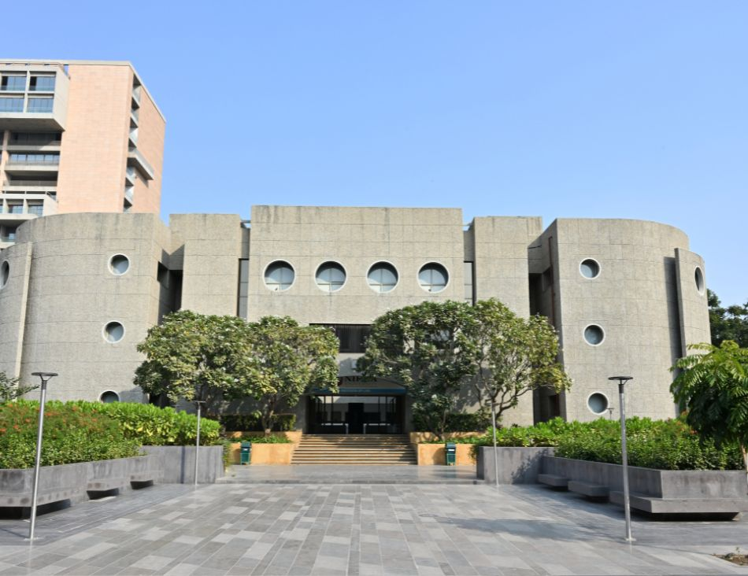

|  |
The Law Department at Nirma University, officially known as the Institute of Law, Nirma University (ILNU) in Ahmedabad, is a respected centre for legal education in Gujarat. Established in 2007 as a constituent part of Nirma University—a NAAC A+ accredited and UGC-recognized multidisciplinary university—the Institute focuses on delivering a dynamic and interdisciplinary legal curriculum that blends rigorous academics with practical skills training. ILNU offers a range of programmes including five-year integrated undergraduate degrees such as B.A., LL.B. (Hons.), B.Com., LL.B. (Hons.), and B.B.A., LL.B. (Hons.), as well as a one-year LL.M. and doctoral studies, all crafted to meet the evolving demands of the legal profession and approved by the Bar Council of India. The department emphasizes ethics, critical thinking, research excellence, and societal responsibility, preparing students to become competent and socially conscious legal professionals.
Beyond classroom learning, the Institute of Law nurtures practical legal skills through activities like moot court competitions, mock client consultations, debates, and internships that connect students with real-world legal environments. The department and its students have received various accolades for academic and social justice contributions, reflecting its commitment to excellence and community engagement. Faculty members are active in research and professional development, adding to the vibrant scholarly environment at ILNU. Situated on the expansive Nirma University campus with well-equipped facilities, the Law Department supports holistic student growth, fostering adept graduates ready for careers in law firms, judiciary, academia, corporate sectors, and public service.